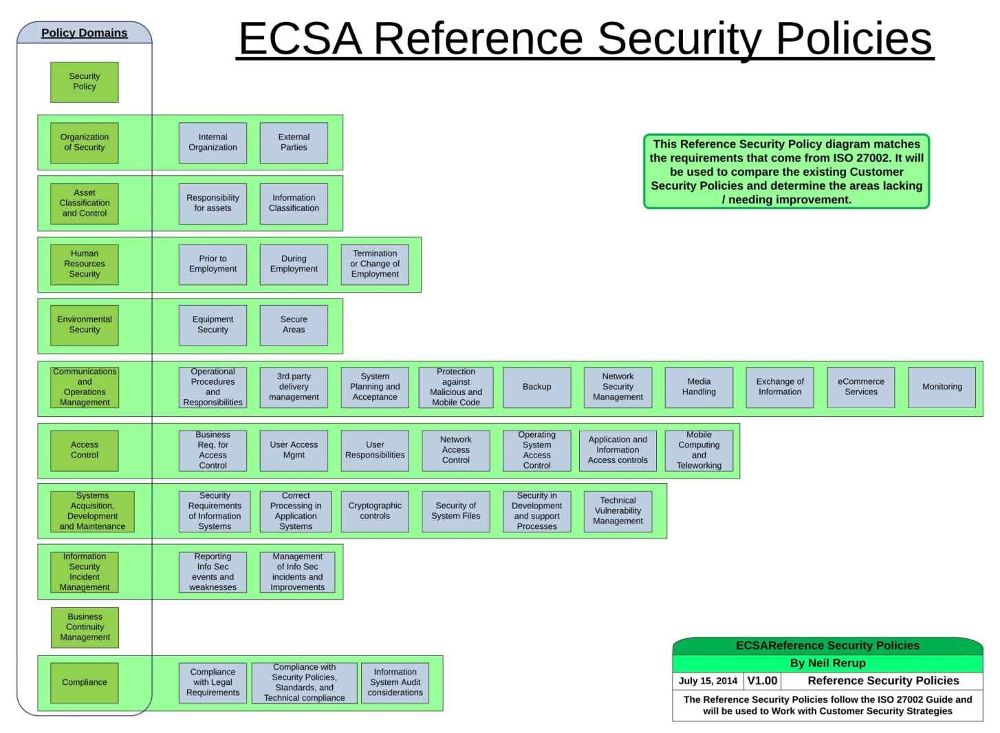
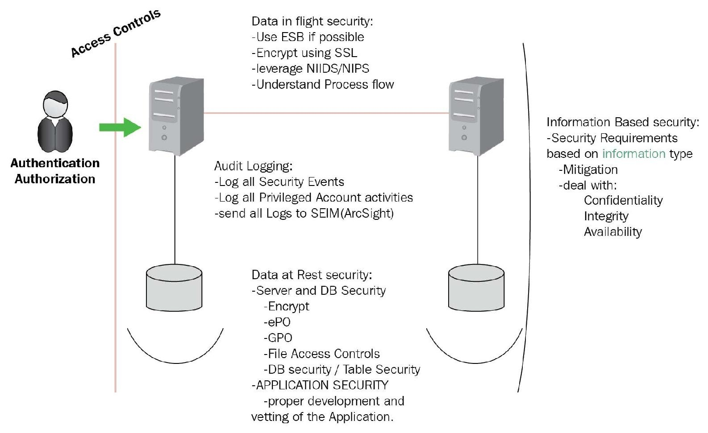
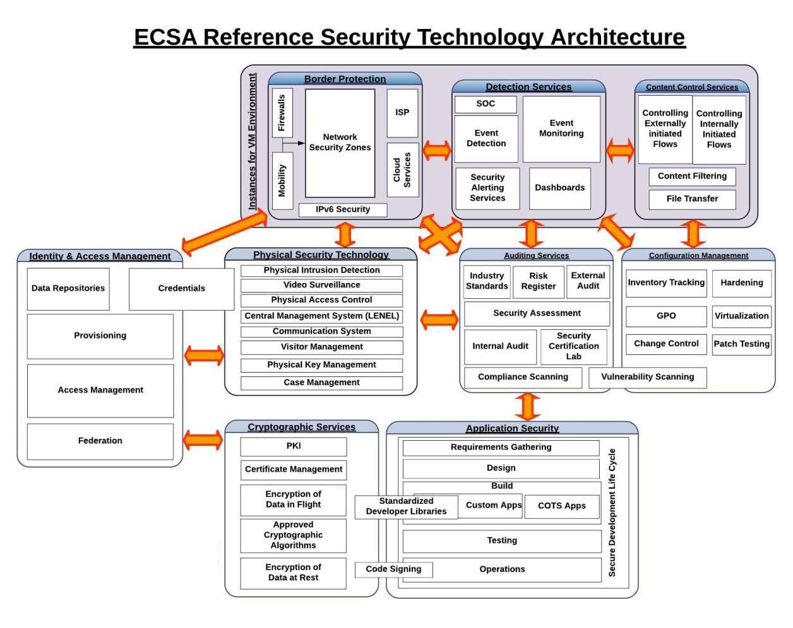
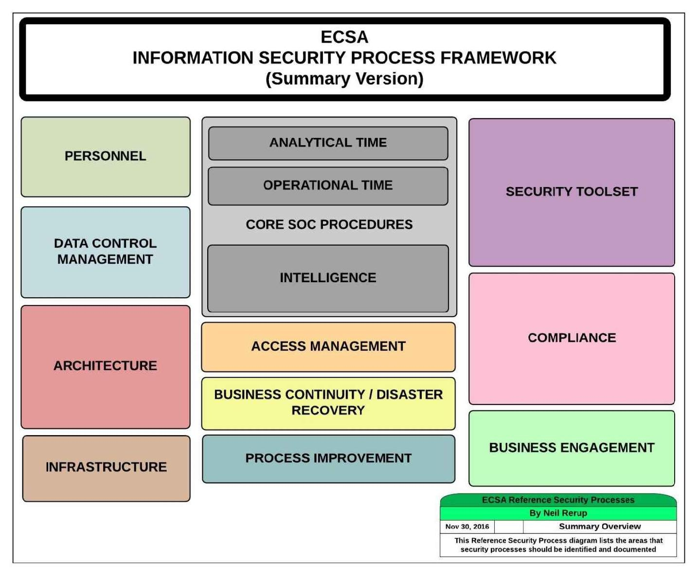
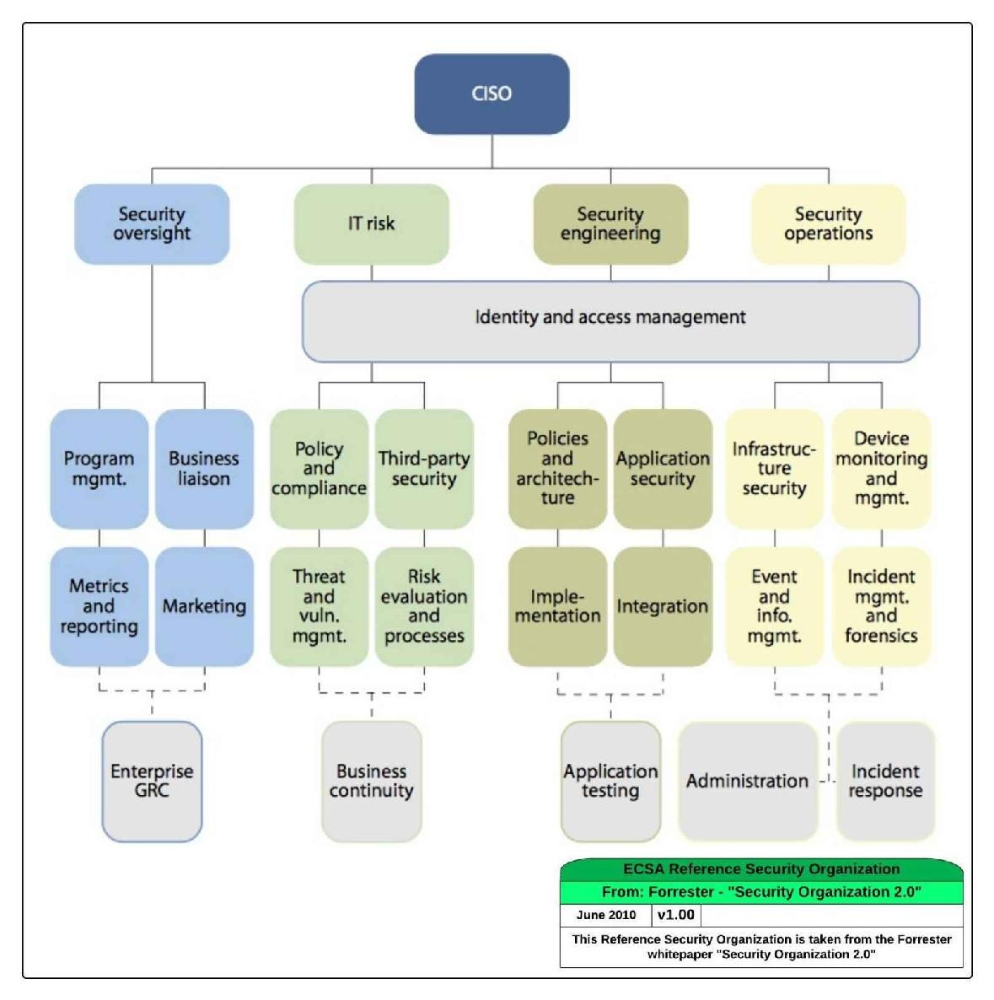
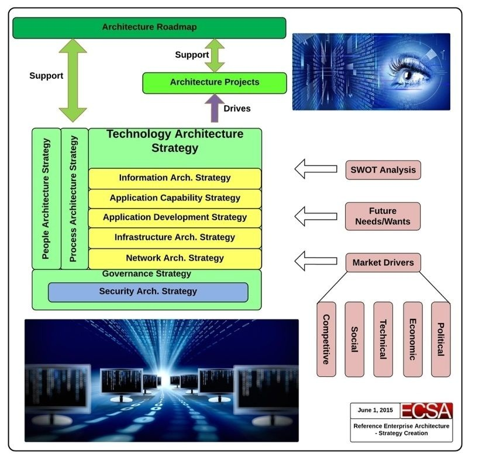
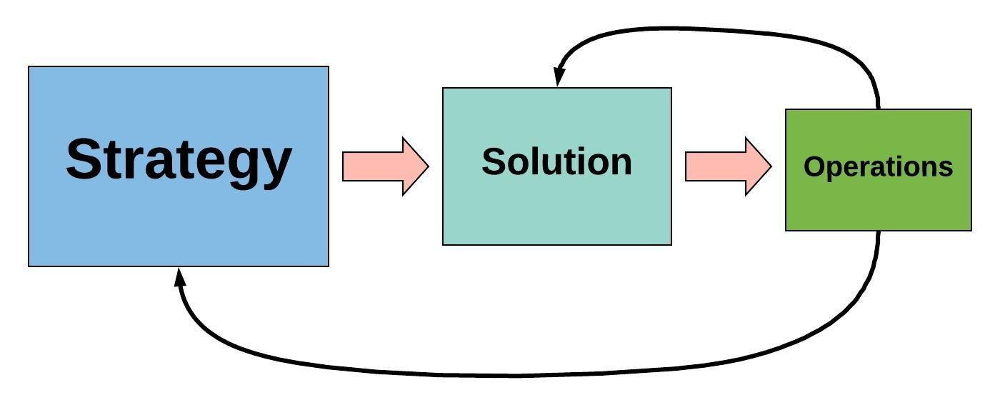
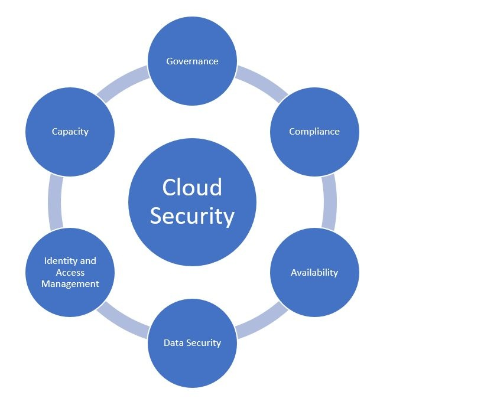

Cybersecurity Architect
Security Architecture History and Overview
Architecture History
- One of the very first architecture frameworks was Zachmann Framework, which came out in 1987. in IBM . People took the Zachman framework and started to adjust it, based on their organization’s needs and personality.
- But an architecture is not a framework. Rather, an architecture, is the end result of a framework.
- The ISO has documented over 67 different architecture frameworks.The most welll-known one is The Open Group Architecture Forum (TOGAF).
The problem with TOGAF is that it was created before the concept of security architecture was conceived. As a result, it doesn’t take into consideration how to deal with security risk.
- Sherwood Applied Business Security Architecture (SABSA) is a framework that took components of TOGAF and Zachman’s to create a uniquely security-based architecture framework. SABSA started in 2007 and has been growing ever since.
From a security point of view, SABSA works very well. Unfortunately, it is just about security and it isn’t something that is widely adopted among an entire IT organization.
Security Architecture History
- Security in network architecture
- Security in infrastructure architecture
- Security in application architecture
- Security in virtual architectures
- Security in the cloud
Security Architecture
- a security architect is an architect that specializes in security, not a security person who can do design. This is a very important distinction.
Architecture layers in an organization
- Governance
- Strategy and program management
- Project delivery
- Operations
The different security architecture roles
- Enterprise security architects: deal more with the strategy and program management layer.
- Solution security architects: focus of projects
- Security engineers: technical architect,focuses on the technology for implementing the technology.
The importance of templatization
- dramatically improve the quality that they deliver, as well as provide a return on investment, simply because they’re able to do things quicker.
Security architecture principles
- Understand that security is not the core business
- Understand and mitigate risk
- Communication is key to success
- Don’t preach
- All solutions are a combination of technology, people, and processes
- Governance drives what must be done, not personal opinion
- Repeat back to your stakeholders what you are hearing in your own words
Security Governance
Security principles
Developing principles
- Talk to people. Consolidate what you hear. Feed it back to them for correction. Finalize and communicate.
- the length of the principles. if they are too long, people won’t read them or bother to reference them.
Sample security architecture principles
-
Principles should be very simple to read and understand, and shouldn’t be more than one sentence in length.
-
it’s important to remember that solutions deal with three or four core components. Most architects will tell you that these components are people, process, and technology. I believe that there is actually a fourth component: governance.
-
People
- Questions
- Who are your primary stakeholders going to be?
- Who is ultimately responsible for security architecture? Sure, you may be creating it, but is it owned by the CISO or the Chief Architect, or someoneelse?
- How do your customers fit into it? Who are your customers?
- Principles
- All security architecture is owned by the Chief Architect with input from the CISO
- We view our customers as the end users of any system we are designing for
- We will always take into consideration the requirements of the sustainment teams
- Questions
-
the process component
- Questions
- What framework will you be following in developing your architectures?
- Is there a focus that you will have from the outset of your design efforts?
- Are you looking for a speedy implementation or will you be looking to balance the business needs with risk?
- Principles
- We will use comprehensive architectural planning based on the TOGAF framework
- We will focus on enterprise-wide solutions rather than local solutions that are enhanced for specific business groups
- We will carefully balance the business need to quickly offer new products against the security risks it might pose to our customers, company brand, or employees
- Questions
-
Technology
- Questions
- Are you comfortable with bleeding edge technology or do you want to be looking at more stable solutions?
- How are you going to look at refreshing the environment? Are you going to be driven by business need, or are you going to be driven by architectural risk?
- Will you take solutions from the various business groups that may have been sold the shiny new object, or are you going to push solutions back to the business groups?
- Principles
- We will adopt proven security technologies that will protect our company and customers. To that end, we want to see examples of the technology in use within our industry.
- Solutions will be driven based on requirements gathered first. We will view any product-based solution that hasn’t had requirements collected first as a flawed solution to be rejected out of hand.
- We will take a Best Suite of Products approach rather than a Best of Breed approach to allow for a more efficient management of assets.
- Questions
-
Governance
some people think of governance as just another process but you can’t call a policy and standard a process. They are artifacts.
- Questions
- How are you going to measure what you have accomplished? Are you meeting the requirements of your organization?
- Is there a way you want to make sure the security architectures are meeting the needs of the business?
- Who has oversight over all security architecture?
- Principles
- We will benchmark ourselves against other organizations in our industry. We want to be in the top quartile in stakeholder satisfaction.
- All solutions will be reviewed by stakeholders after requirements have beengathered, designs have been put together, and the build environments have been implemented.
If you were to limit yourself to 10 principles, you could put all these principles onto one sheet of paper and hand it to any new employee for them to post on their cubicle wall.
- Questions
Security Policies and Standards
-
Policies
policies are stances that indicate the intent or goal of what an organization is aiming for.
-
Procedures
Procedures are the methods that are used to implement the policies.
-
Standards
Standards are measuring sticks that are used to compare where an organization is in an area compared to where they want to be.
-
Policy development process
The best solution for this is a series of workshops that are done in several stages. They are as follows:
-
Interview individual stakeholders
The best way to start the entire process is to interview each stakeholder individually
-
Agree upon areas for policy development
-
Discussion of the different options within individual policies and the selection of policy requirements
-
Review of draft policy documents
-
Final sign-off of policy documents
-
-
The policy document
The ideal case is that the policy or standard is no longer than two pages. Any longer and you are not clearly communicating direction.
a good template to use for the creation of a policy
<NAME OF POLICY> Policy 1. Purpose The purpose of this policy is to <REASON FOR POLICY> . 2. Scope The scope of this policy includes <DETAIL ALL PERSONNEL AND SYSTEMS THAT ARE AFFECTED BY THIS POLICY. ALSO DETAIL OUT OF SCOPE AREAS> 3. Policy The policy that applies to <POLICY AREA> within <CLIENT> is as follows: <SHORT BULLETED SENTENCES RELATED TO POLICY AREA> * <POLICY AREA> Guidelines <DETAIL GUIDELINES THAT GIVE EXAMPLES OF POLICY> <MAKE SHORT BULLETED SENTENCES> 4. Enforcement Violations of this policy will be subject to <POLICY ENFORCEMENT ACTIVITY/HR ENFORCEMENT POLICY> 5. Definitions Terms | Definition ----- | ----- <TERM TO BE DEFINED> | <DEFINITION OF TERM> -
Language of policies
Another common problem that people make when writing a policy document is that they mix up the wording used in policies with those used in procedures. Procedures are used to explain how to do something, whereas policies are used to say what the end result must be. Two completely different purposes.
The other thing to remember when writing a policy is that you want to be as independent of specific technologies as possible. Because the IT industry changes so much, it is important that policies not refer to specific technologies.
-
Security policy and standard areas
Many organizations try to align with the ISO 27000 series of security standards.

Security Architecture Guidance (SAG) document
Each section of the SAG should have requirements stated. Address these requirements as follows:
1. As part of the business requirement documentation activities, you need to gather the appropriate requirements for your project. Collect the appropriate
standards for the project and add your security requirements.
2. Use the requirements to put in the appropriate security controls in your Architecture Design Document (ADD). It will help in making sure your solution has the appropriate level of security applied.
-
Security architecture guidance for projects
When looking at a solution, a security architect really only looks at the areas shown in the following diagram:

-
Summary of requirements in an SAG
Architecture Design Document (ADD). Those requirements are as follows: Req.# Requirement description 1. Document the type of information that the solution is handling 2. Document the confidentiality, integrity, and availability requirements that the business has 3.State what your authentication mechanism will be 4.State what the authorizations are within the solution 5. State what you access control mechanisms are from a network perspective, a host perspective, and from an application perspective 6. State what your data in flight controls are 7. State what your data at rest controls are 8. State what your logging controls are
Reference Security Architecture
Reference security technology architecture
-
Border protection
- Network zoning
- Test/Development environment
- QA/Mirror environment
- Production environment
I’ve seen data centers with 26 production zones just to isolate traffic since traffic flows from one zone can impact the traffic from another.
- Corporate desktop environment
Some organizations will also have a wireless security zone.Separating this environment from the corporate desktop environment may be a good idea for your organization.
- DMZs
Design Rule #1: When you design your network zones, always logically group your devices based on security classification. Don’t intermix them. Design Rule #2: When you design your network zones, always have your traffic initialize in a higher-security zone and go to a lower-security zone. Do not let traffic be initialized from a lower zone and go to a higher zone.
Bring Your Own Device (BYOD),or cloud-based solutions the border of the network became the phone and not the firewall. Shift your design concept away from protecting devices to protecting information.
-
Detection services
- IDS/IPS
- NAC
- Event monitoring
- Dashboards
-
Content control services
- Antivirus
- Anti-spam filtering
- Web-based antivirus
- Web activity monitoring
- Whitelisting
- Data Loss Prevention (DLP)
- Content filtering
- File transfer
-
Configuration management
- Group Policy Objects (GPO)
- Hardening–Gold Image
- Virtualization
- Patch management
- Vulnerability scanning
Design rule #3: Make sure that the scanning solution isn’t scanning through a firewall. Otherwise, you may not see all the configuration elements of your targets and you’ll also load up your firewall with traffic. Agents placed in each security zone with the management traffic going back to a central console is a good design concept.
-
Auditing services
- Risk registers
for an architect, a risk register should be focused on architecture risks, not security risks or project risks.
- Security certification lab
While not a specific piece of technology, a security certification lab is something that you use for testing new technologies in order to ensure that you know what the security flaws may be.
- Compliance scanning
Remember the old saying, You can be in compliance but that doesn’t mean you are secure.
- Industry standards
For example:Payment Card Industry (PCI) standard calls for the use of a SIEM. Design rule #4: Make sure you have the ability to audit the technological configurations and controls of cloud solutions that are in use, otherwise you have to completely trust those solutions.
- Risk registers
-
Physical security technology
Design rule #5: You can have all the fancy technology in the world that you want, but if someone is able to just walk up to the solutions, what’s the point?
- Physical access control
- Video surveillance
- Physical intrusion detection
- Visitor management
- Communication system
- Central management system
Design rule #6: Integrate the logs from your CMS into your SIEM so that you can correlate physical security logs with cybersecurity logs.
-
Identity and Access Management (IAM)
- Credentials
- Data repositories
- Access management
- Provisioning
- Federation
Design rule #7: While IAM is viewed as a solution that can provide a ROI to your organization, remember that there is an elevated risk associated with centralizing these activities. Therefore, consider the risk level of your solution before committing to integrating IAM with it.
-
Cryptographic services
- Encryption of data in flight
- Encryption of data at rest
Design rule #8: Most organizations don’t have the time to keep up with the different standards. I would recommend that you tie your encryption standards to what is recommended by NIST. Let it be NIST’s job to stay on top of evolving encryption standards and then tie your approved algorithm list to them.
-
Application security
- Requirements gathering stage
- Design stage **find a checklist that has already been created and make use of it. **
- Build stage
- Standardized developer libraries
- Provide coding best practices
- Code reviews
- Service-oriented architecture
- Enterprise services bus
- Testing stage
- Static code reviews
- Dynamic code reviews
- Vulnerability Assessment
- Fuzzing
- Production stage
Design rule #9: Make use of checklists for every stage in the development life cycle. This way, you can encourage the use of standardization, which will reduce your workload in the long run.

Reference security process architecture
> Security is not a technology, it's a process.

-
Personnel
- Shift scheduling and staffing
- Shift turn over
- Daily operations call
- Training
-
Data control management
- Data classification
- Computer and media disposal
- Media library management
- Anti-contamination
- Encryption and certificate creation
-
Core SOC processes Operational Time processes are as follows
- Crisis response
- Triage
- Callout
- Case Management The Analytical Time processes are as follows
- Incident Response
- Incident Summary
- Incident Monitoring
- Incident Research
- Change Management
- Problem Management
-
Intelligence
- Monitoring event severity
- Event analysis
- Modeling/Baselining
- Vulnerability/Compliance Scanning
-
Architecture
-
Access management
- Account provisioning/deprovisioning
- Account reviews
- Physical access
-
Compliance
- Internal scheduled audits
- External scheduled audits
- Privacy Impact Assessments (PIA)
- Security/Threat Risk Assessment (STRA)
- Vendor Risk Assessments
- Security Policy Management
-
Infrastructure
- Hardening For example:gold image
- Configuration Management
-
Business Continuity/Disaster Recovery
- Process triggered updates
- Scheduled review
- Incident/disaster simulation
-
Security Toolset
- Vendor management
- Procurement and licensing
- Maintenance
- Usage
- Backup
- Software/firmware revision control
-
Business Engagement
- Corporate communication
- Operational requests
- Reporting
- Physical security
- Privacy officer
-
Process Improvement
- Information metrics
Metrics and KPIs are not the same. A KPI is a metric but a metric is NOT a KPI. The difference is the alignment with the business or strategic objectives.
- Key Performance Indicators (KPIs)
- Reporting
- Information metrics
Reference Security People Architecture

it’s important to understand that these security functions don’t necessarily have to be part of the CISO organization.
-
Security oversight
- Program Management put forward to move the security of the organization to a strategic future state
- Business liaison there is a need to interface with the rest of the business.
- Marketing
- Metrics and Reporting
-
IT risk
- Policy and compliance
- Third party security
- Threat and vulnerability management
- Risk evaluation and processes Who is responsible for all of above
-
Security engineering
- Policies and architecture talking about the security architecture policy rather than security policy.
- Application security Who is responsible for…
- Implementation
- Integration the integration is the integration of security technologies into non-security projects.Remember that security is not something that lives in isolation — it is something that should be integrated into everything.
-
Security operations As the importance goes up, the more security operations are brought back in-house.
- Infrastructure security
- Device monitoring and management
- Event and information management
- Incident management and forensics Who is responsible for all of above
-
Identity and Access Management
don’t forget to find a solution and document the impacts on your organization. Don’t forget your organization has stakeholders into your solutions.
Cybersecurity Architecture Strategy
Cybersecurity architecture strategy

-
Leveraging the Reference Security Architecture
make sure you have a RSA is that you want to use it as a structure or framework for everything that you do, including the creation of your security architecture strategies. Use your RSA to structure your strategies.
-
Requirement gathering for strategies
Requirements can be found from the people, processes, technologies, and governance.
- People
- CIO
- The chief architect
- CISO
- Operations team lead
- Help desk
- Finance
- technologies
- Age of solutions
- Underlying infrastructure
- Patching and updates
- Processes
- Compliance requirements
- Users of the process
- Workflow
- governance
- BCP/DRP
- Access controls
- Communications and operations management for example,all of above from ISO27000
- People
-
Current state assessment
Keeping in mind the four components of a strategy (where you are, where you are going, what are your resources?, and how are you going to get there?), probably the most important component of the strategy is the current state assessment. Again, this is where your Reference Security Architecture comes in.
-
Environmental variables
- Political variables
- Economic variables
- Technical variables
- Social variables
- Competitive variables
-
Future wants and needs
Strengths, Weaknesses, Opportunities, and Threats (SWOT)
- Initiatives
- Roadmaps
- Annual review
- Metrics(People,Process,Technology,Governance)
There’s a saying in business — if it’s important, you measure it.
Program and Strategy Level Work Artifacts
Reference security architecture
-
Key decision documents
Like everything that an architect does, you need to build on the requirements and it’s a poor architect that doesn’t look at the requirements first.Typically, your KDD should have the following sections in it.
- Purpose
- Issue
- Recommendation
- Assumptions
- Risks
- Constraints
- Stakeholder requirements
- Vendor information
- Positions and arguments
-
Risk register
- Understanding risk
- Security risk
- Architectural risk
- Project risk
- Business risk
- Monitoring risk
- The risk impact assessment and the risk register
- Final measurement of risk
- Understanding risk
-
Whitepapers
- Research on a technology
- Review of a vendor’s products
- Integration of security into a solution
- Vendor suite commentary
-
Evaluation of the current state
Security Architecture in Waterfall Projects
this book has covered the security architect’s activities in the governance layer and in the strategic (or program) layer. However, the vast majority of work that a security architect does is performed in the project delivery layer.
Security Architecture Project Delivery Artifacts
Requirements Gathering Documentation
- Functional requirements
- Nonfunctional requirements
- Requirement-gathering process
- Requirements-gathering spreadsheet
- Requirements document
- Requirements Traceability Matrix (RTM)
- Vendor selection
- Security-design assessments
- SDA project plan
- Scope statement
- High-level requirements
- Deliverables
- Satisfaction criteria
- Assumptions/Constraints/Risks
- SDA checklist
- SDA workbook
- SDA executive summary
- SDA project plan
- Test Plans
- Vulnerability testing
- Penetration testing
- Static (Whitebox) testing
- Dynamic (Blackbox) testing
- Fuzzing
- Performance testing
- Unit testing
- Integration testing
- High-Availability (HA) testing
- Disaster-Recovery (DR) testing
- User-Acceptance Testing (UAT)
- Build documentation
Architecture Design Document
Header sections
Some people will include the following information:
- Release histories
- A list of reviewers
- A list of documentation used in the creation of the architecture (which can be very useful information later)
- A glossary of terms
- A table of contents
Beyond that, though, is the actual information that impacts the ADD.
- Purpose, summary, and usage
- Executive summary
- Scope
- Compliance
Just provide a pointer to it (for example, a URL link to the policy or standard, if it’s located in a place that provides a URL).
- References to requirements
Target architecture
- Business architecture
- Process flows
- RACI chart Responsible, Accountable, Consulted, and Informed (RACI)
- Governance model
- Data and information architecture
- Solution information
- Database structure
- Data structure
- System information
- Logs
- Metadata
Some of the security architecture information that you will want to include in your ADD is as follows:
- Criticality classification
- CRUD matrix
- Data at rest
- Data in flight
- Solution information
- Application architecture
there are basically three types of application situations:
- COTS application: A Commercial off-the-shelf (CTOS)
- Custom application
- Hybrid application
From a security architecture point of view, there are certain components that should be included as part of this section. They are as follows:
- Application level roles
- Authentication source
- Security logging
- Web Application Firewall (WAF)
- Application-security architecture checks
- Deployment and infrastructure considerations
- Input validation
- Authentication/Authorization considerations
- Configuration considerations
- Sensitive data considerations
- Session considerations
- Cryptographic considerations
- Exception-handling
- Infrastructure architecture
- Network components
- Server components
- Database components
- Application server components
- Management/Monitoring tools
- Backup component
- Endpoint components
Concluding sections
- Gap analysis
- Recommendations
Security Architecture and Operations

Practical Security Architecture Designs
Endpoint security
- Ransomware
- Mitigation backup
- Spyware and adware
- Mitigation
- One way is by ensuring that operating systems and programs are up to date.
- Another mitigation measure is safe storage of passwords. One should avoid saving passwords on a browser
- One should also configure browser settings to add security.
- one should install an antivirus program to help combat actions of spyware programs.
- Mitigation
- Trojan horses
- Mitigation
- it is best for users to ensure that they avoid downloading questionable software or software from questionable sites.
- Another mitigation measure is safe storage of passwords. One should avoid saving passwords on a browser
- one should install an antivirus program to help combat actions of spyware programs.
- Mitigation
- Viruses
-
Mitigation
users should avoid clicking on links sent to them by strangers via email. They should also be cautious when downloading email attachments sent by unknown people or emails from people in their contact lists that seem strange. It is also advisable for users to avoid connecting to public Wi-Fi hotspots since malware can easily traverse a network and infect computers connected to it if there is one infected computer in the network. Host-based firewalls can also come in handy to prevent browsers from opening known malicious sites. Users should also keep updated antivirus programs running on their computers to prevent viruses from taking over their machines if they manage to enter. In extreme cases where a computer has been overrun by a virus, the best option is to wipe out the entire hard disk through formatting and then installing a new OS.
In organizations, users can be best prepared to deal with viruses through training,
-
Mail security
- Email security best practices
- Email security policies
- Use of secured exchange servers
- User education on security threats
- Host-based security tools
- Encryption
- Securing webmail applications
- Email scanners
- Email backup
- End user security practices
- Avoid opening suspicious emails, attachments, or links
- Changing passwords regularly
- Not sharing passwords
- Using spam filters
- Avoid logging into emails on public Wi-Fi connections
- Avoid sending sensitive information via mail
- Email security resources
- Microsoft Exchange Server
- Sophos PureMessage for Microsoft Exchange
- Symantec mail security
- Websense email security
Network security
- DDOS attacks
- Mitigation
- The best mitigation measure for DDoS attacks is the installation of an effective firewall on the network.
- Intelligent firewalls are new types of firewalls that use machine learning to continually improve their performance.
- Cyber resilience—establish alternative sites that can take over the processing task once the main servers are downed
- At an individual level,install antivirus or email filter.
- Mitigation
- Eavesdropping
- Mitigation
- use SSL protocols
- Installation of firewalls
- Intrusion detection systems
- Network segmentation
- the responsibility of the user
- Mitigation
- Data breaches
- Mitigation
- Installation of firewalls
- Intrusion detection systems
- user awareness
- Mitigation
Cloud security

- Data breaches
- Mitigation
- The most effective way to protect against data breaches on the cloud is by using two-factor authentication.
- Another effective way of managing data breaches on cloud platforms is through the use of encryption.
- Mitigation
- Compromised credentials
- Mitigation
- The only mitigation for this problem is forcing users to use strong passwords.
- Third-party password manager
- two-factor authentication
- Mitigation
- Denial of Service
- Mitigation
- The best mitigation for DoS attacks for an organization that needs to be up and running continuously is to have an alternative site.
- Mitigation
Bring Your Own Device
- Data loss
- Mitigation
- The best mitigation for data loss is a secure backup.
- To combat the security risk of organizational data falling into the wrong hands after a theft, organizations should give users software that encrypts hard disks.
- organizations should set email client-software such as Outlook to request for authentication every time it is opened.
- Mitigation
- Insecure usage
- MItigation
- a separation should be done between one’s personal life and work life. The best way to ensure that an employee’s personal life is separated from the workplace is requiring an employee to have two user profiles.
- MItigation
- Remote access by malicious parties
- MItigation
- create an encrypted connection to the servers.
- ensure that sensitive data from servers is only placed in the main memory and only when the application has been logged into by the user. When the application is closed, all of the data should be erased.
- MItigation
- Malicious applications
- MItigation
- A malware check should be done to ensure that the personal device does not come with existing threats.
- an active and updated antivirus program
- MItigation
- Insider threats
- MItigation
- An insider threat is a powerful enemy and it is best to prevent this enemy from getting into an organization in the first place. Employees should be subjected to background checks to determine their work history and why they left their previous jobs and whether they present security risks to an organization.
- Acl role-based
- MItigation
- Internet of Things
- Weak authentication/authorization
- MItigation
- Manufacturers can help mitigate the challenge of weak passwords by setting up the devices with One Time Passwords which owners have to change after they activate their IoT devices. The passwords should be subjected to a complexity test and users should not be allowed to configure their devices with weak passwords.
- rotect the authentication credentials. be encrypted so that a third party cannot directly read the authentication details from the memories of these devices.
- separate the roles,an admin account and a normal user account at the very least.
- two-factor authentication
- re-authentication after some time
- MItigation
- Insecure interfaces
- Mitigation
- They must begin by making sure that these interfaces are not prone to either SQL injection or XSS scripting attacks.
- encryption so that credentials are not transmitted in plain text from users to the web interfaces.
- these interfaces should feature more robust password recovery mechanisms and also lock out login attempts after a number of failed sign-in attempts.
- Mitigation
- Lack of encryption
- Mitigation
- using SSL or TSL encryption protocols
- Mitigation
- Insufficient configurability
- Mitigation
- manufacturers should prioritize security in the design of their devices. manufacturers should take the responsibility of updating the interfaces to feature more security options.
- Mitigation
- Weak authentication/authorization
Trends in Security Architecture Technology
Border protection
- Cloud security
- Tokenization
- Disaster recovery
- VPN
Detection services
- Artificial Intelligence
- Incident response
Stix a (structured language for cyber threat intelligence) and Taxii a (transport mechanism for sharing cyber threat intelligence) were protocols that were developed to allow for the communication of threat information so that secondary systems could anticipate a new attack vector.
Content control services
- Spam as a new phishing technique
Identity and Access Management
- Increasing use of two factor authentication
Auditing services
- Privacy/GDPR
Configuration management
- Internet of Things
- End point security
- New technologies — new breaches
Cryptographic services
- Bitcoin and blockchain security
Application security
- Applications serving their nation states
The Future of Security Architecture
Environmental variables
- Political variables
- Economic variables
- Technical variables
- Social variables
- Competitive variables
General future associated with security architects
- Market consolidations
- Breaches and reactions self-healing mechanism
- Secure by design?
- Managed Security Service Providers and outsourcers
- The evolution of the security tower
there are three (or four) components to every solution: people, process, technology, (and governance). Technology has been covered by the various towers as we move up the OSI model. People are being dealt with by outsourcing and by MSSPs. The fourth component is governance. But governance is being dealt with by legislation, which we’ve talked about. So what’s left? Process! One of the areas that you can expect to start to grow over the next few years will be Business Process Automation (BPA) and Business Process Management (BPM).
- The merging of cybersecurity and physical security